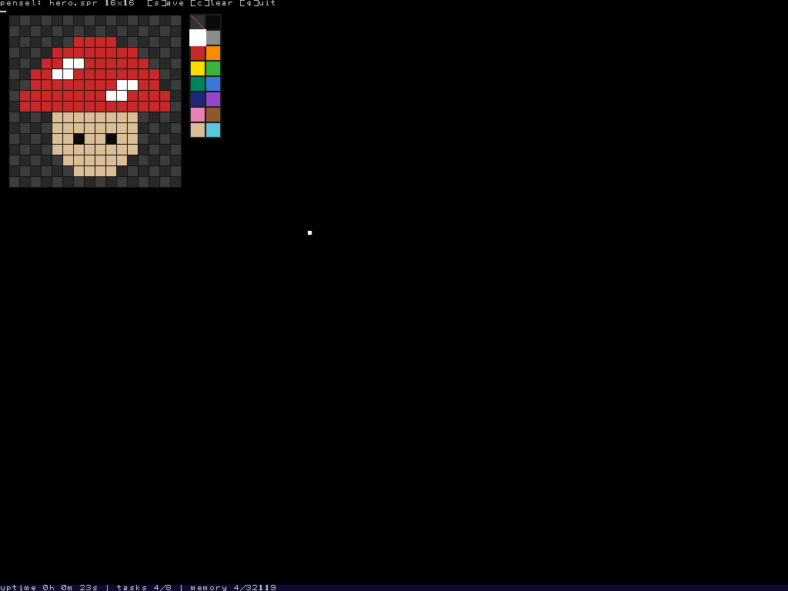

pensel
pensel is moonshot's pixel art editor.
it takes over one window and paints the sprite being edited as a zoomed
grid. on the way out it writes the result to
jakel as a file a game can
load. draw (file) opens it and draw (file) (size)
opens it at a given canvas size, square, from 4 to 64 pixels across.

drawing
the left mouse button paints the cell under the pointer, and dragging paints a stroke. the right button erases. a click on the palette picks a colour. an empty cell shows as a checkerboard, so transparent and black look different.
keys
s- save.
c- clear the canvas.
n,d- add a frame after this one, as a copy of it, or delete this frame.
,and.- step back and forward through the frames.
q, escape- quit, saving if anything was painted.
on every frame but the first, an empty pixel shows the frame before it faintly, so movement is drawn against where things just were. how many frames fit depends on the size, eight at 16 by 16, four at 32 by 32 and one at 64 by 64.
the file
a sprite file is a short header followed by pixels, little-endian throughout. a
game reads it back with readfile(), so
gnista can show art drawn on the
machine itself, with no rebuild.
0..7 width in pixels
8..15 height
16..23 frame count
24.. frames * width * height * 4 bytes, BGR0 per pixela pixel of all zeroes is transparent, so the palette's black is a near-black.